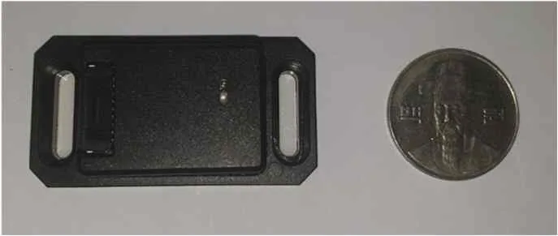
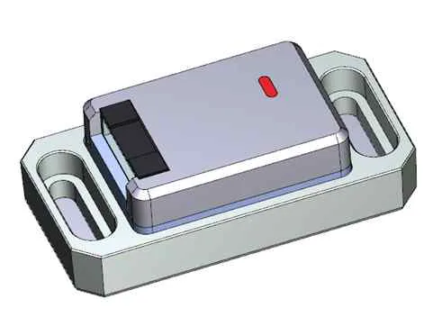
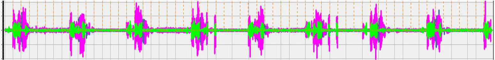
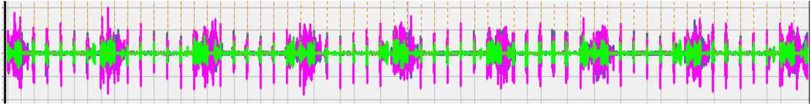
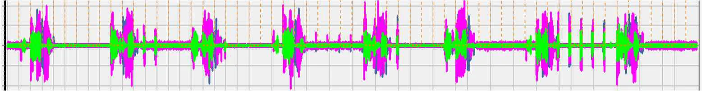
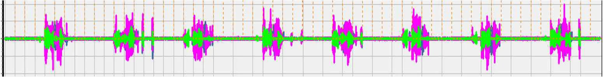
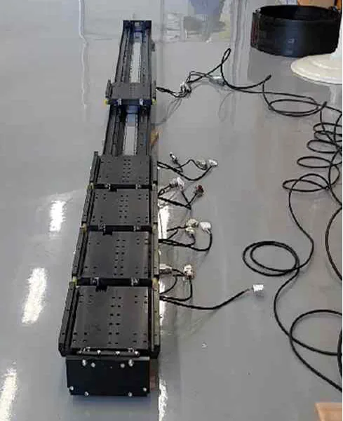

01 / Industrial IoT · Sensing & Diagnostics
고장 나기 전에.
설비의 신호를 먼저.
설비에 붙여 진동과 초음파로 고장 징후를 잡는 예측진단 센서입니다.
센서 보드의 회로 · 아트워크와 RS-485 통신을 설계했고, S사 · L사 설비에 적용되었습니다.
- 25 × 49 × 15mm
- 센서 외함 크기
- 3.2kHz
- 진동 측정 주파수 (6kHz형 선택)
- 80kHz
- 초음파 측정 대역 (복합형)
- RS-485
- 게이트웨이와 양방향 통신
01 / Why Predictive
고장은 갑자기 오지 않으니까.
신호는 늘 먼저.
설비 이상은 초음파, 진동, 소음 · 전력, 열의 순서로 드러납니다. 초음파와 진동은 고장 몇 달 전에, 소음과 전력 변화는 몇 주 전에, 열은 며칠 전에 나타납니다. 앞 단계에서 잡을수록 정비 일정을 여유 있게 세우고 유지보수 비용을 줄일 수 있습니다.
02 / Design Scope
작은 외함 안에.
센서와 통신을 함께.
센서 보드의 회로와 아트워크, 그리고 게이트웨이와 주고받는 RS-485 통신을 설계했습니다.


센서 실물(100원 동전과 비교)과 외함 3D 모델 · 자석이나 볼트로 설비에 고정합니다.
- 01
복합 센서 보드 회로
3축 진동 센서와 2축 경사계를 기본으로, 형식에 따라 초음파 · 온도 등 선택 센서를 한 보드에 구성했습니다.
- 02
초소형 아트워크
25 × 49 × 15mm 금속 외함 안에 들어가도록 부품 배치와 패턴을 설계했습니다.
- 03
RS-485 멀티드롭 연결
통신선 하나에 센서 여러 대를 연결하고, 센서마다 고유 ID(A001, A002 …)를 부여해 구분합니다.
- 04
양방향 통신 구현
게이트웨이가 요청하면 센서가 측정값을 보내고, 샘플링 · 측정 범위 · 수집 시간 같은 설정값은 게이트웨이에서 센서로 내려보냅니다.
- 05
산업용 전원 입력
DC 24V / 12V 입력, 동작 온도 −40 ~ 80℃.
03 / System
센서는 현장에서.
판단은 게이트웨이와 서버에서.
센서가 설비에서 진동과 초음파를 측정하고, 게이트웨이가 RS-485로 여러 센서의 데이터를 모아 서버로 올립니다.
- 데이터 요청게이트웨이가 센서 ID를 지정해 데이터를 요청합니다.
- 측정값 전송해당 센서가 측정 · 처리한 값을 RS-485로 보냅니다.
- 서버 업로드게이트웨이가 모은 데이터를 IIoT 서버로 올립니다.
- 설정 변경서버와 게이트웨이에서 센서의 측정 조건을 바꿔 내려보냅니다.
시간 영역
- 가속도 데이터 (FIFO · 고역 통과 필터)
- 속도 RMS (X · Y · Z)
- 가속도 피크 (X · Y · Z)
진동의 전체 크기와 순간 충격을 축마다 계산합니다.
주파수 영역
- 오버래핑 · 윈도잉
- FFT
- 평균
- 스케일 보정
주파수마다 진동이 얼마나 큰지 봅니다.
센서 안에서 계산하는 값입니다. 샘플링 속도 · 측정 범위 · 수집 시간은 설치할 때 설정합니다.
04 / Specifications
작은 크기.
설정할 수 있는 측정 조건.
형식
- 3kHz형진동 3kHz
- 6kHz형진동 6kHz
- 복합 3kHz형진동 3kHz · 초음파 80kHz
- 복합 6kHz형진동 6kHz · 초음파 80kHz
기본형 사양 (3kHz형)
진동
- 측정 주파수
- 3.2kHz (공진 X · Y 3.0kHz, Z 2.2kHz)
- 샘플링 속도
- 13 ~ 6,660Hz (10단계)설치 시 설정
- 측정 범위
- ±2 · ±4 · ±8 · ±16g설치 시 설정
- 분해능
- 0.061 ~ 0.488 mg/LSB (범위별)
- 주파수 분해능
- 128 ~ 1,024설치 시 설정
- 수집 시간
- 500 ~ 60,000ms설치 시 설정
- 오버래핑
- 5 ~ 95%
- 윈도 함수
- Rectangular · Hanning · Hamming · Flat Top
경사계
- 측정 축
- X · Y
- 측정 범위
- ±0.5 · ±1 · ±2 · ±3g선택
- 온도 안정성
- 0.075mg/℃ 미만
공통
- 통신
- RS-485 (게이트웨이와 양방향)
- 전원
- DC 24V / 12V
- 동작 온도
- −40 ~ 80℃
- 크기 · 고정
- 25 × 49 × 15mm · 자석 또는 볼트
선택 센서 · 통신
- 충격
- ±100 · ±200 · ±400g
- 온도
- ±0.5℃ (−40 ~ 125℃)
- 소음 · 초음파
- 100Hz ~ 80kHz
- 습도
- ±3.5%rH (20 ~ 80%rH)
- 압력
- 260 ~ 1,260hPa (절대압)
- 경사각
- 0.076mg/digit
- 유선 통신
- RS-485 또는 10BASE-T1L (10Mbps · 최대 1km)
05 / Field Data
같은 설비.
다른 파형.
리니어 스테이지에 센서를 붙이고, 정상 상태와 세 가지 고장 상태를 만들어 3축 진동을 비교한 시험입니다. 고장 상태마다 진동이 커지는 구간과 반복 모양이 달라집니다.
- 정상

- 리테이너 파손2블록

- 그리스 없음4블록

- 강구 4~5개 제거2블록


3축 진동 측정 화면 · 리니어 스테이지 시험.
초음파로 구분하는 고장 증상
고장마다 초음파가 나타나는 주파수 대역과 FFT 모양이 다릅니다.
| 고장 증상 | 주파수 대역 | FFT 패턴 | 대표 원인 |
|---|---|---|---|
| 베어링 초기 마모 | 20 ~ 30kHz | 좁은 대역에서 반복적이고 일정한 고주파 진폭 | 볼베어링 미세 손상, 윤활 부족 |
| 회전체 마찰 이상 | 25 ~ 40kHz | 연속적인 고진폭, 특정 대역에 고정 | 축 마찰, 브러시 접촉 불량, 마모음 |
| 베어링 크랙 · 파열 | 30 ~ 45kHz | 불규칙하고 높은 스파이크형 피크 | 외륜 · 내륜 크랙, 파손 초기 |
| 공기 · 가스 누출 | 35 ~ 50kHz | 넓은 대역에서 지속되는 고주파 (노이즈처럼 보임) | 에어 · CO₂ · 스팀 등 압력 누출 |
| 전기 스파크 · 아크 | 40 ~ 60kHz 이상 | 넓은 대역에서 순간적 · 무작위 고진폭 피크 | 스파크, 방전, 전기 리플, 누전 |
- 53kHz전원부 스위칭 주파수
- 40kHz초음파 센서 동작음
- 27kHz아크 발생
초음파 센서로 검출한 예.
06 / Applications
멈추면 안 되는 설비에.
먼저 붙입니다.
S사 · L사 설비에 적용되었습니다.
From Sensor to System
설비에 붙일 센서가 필요하다면.
측정 대상부터 알려 주세요.
측정할 신호, 설치 환경, 통신 방식을 함께 검토합니다.